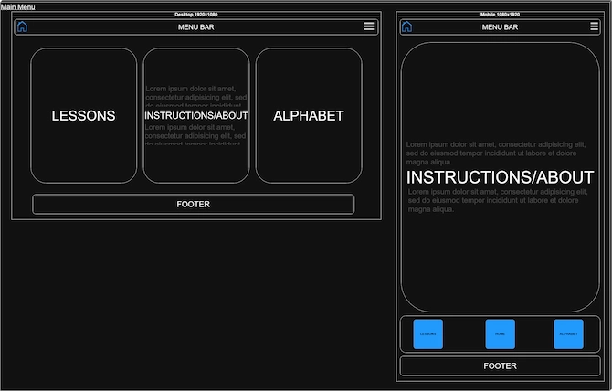
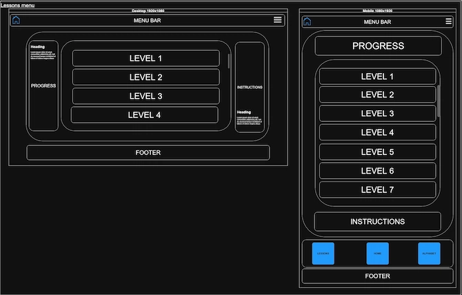
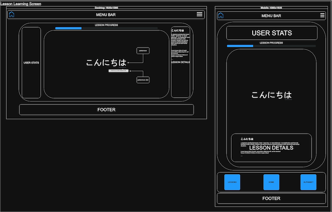
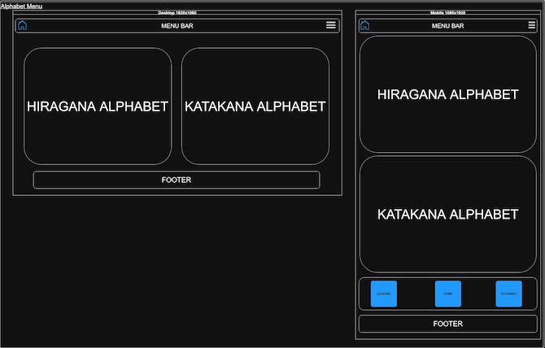
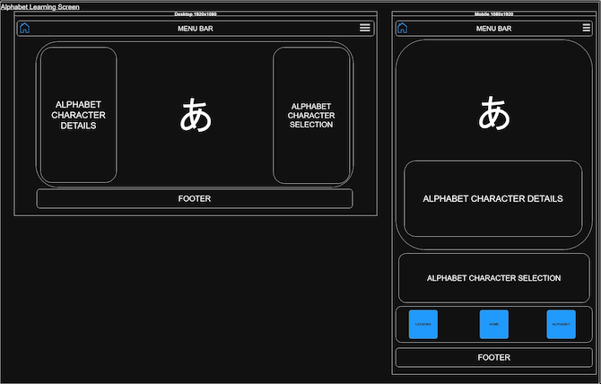

Dekiru (できる) - Meaning "you can do it" in Japanese. I thought about a phrase or word that would be short enough so you could say on the fly and something that had common alphabet characters so it would be easier to pronounce for anyone attempting to learn Japanese. Choosing this for the site name brought simplicity as well as meaning behind the translation which supports the user in their learning journey.
Site Purpose:
Providing beginners with bite-sized Japanese lessons, focusing on:
Common phrases and their structure
Grammar particles (like は, か, が)
Basic sentence formation
Practice with the kana alphabet panel
The goal is for learners to start forming simple sentences quickly without being overwhelmed by kanji or long grammar lessons.
Scenarios:
"I want to quickly review a particle I forgot, can I find examples that show it in use?"
"I only have a few minutes a day, does the site provide quick lessons I can do daily?"
"I'm a visual learner, does the site include common phrases with highlighted particles?"
"I want to know about how Japanese sentences are formed differently from English, can this site show me how the two languages differ?"
Color Schema:
Primary Color:
Secondary color:
Accent Colors:
Typography:
The only font used for all elements to maintain consistancy and readability: Roboto Mono🔗 (You're looking at it)
WireframesDesktop and Mobile view:Main menu:

This wireframe outlines the main page that user's will encounter when visiting the site for the first time.LessonsDesktop and Mobile viewMain menu:

This wireframe outlines the page that the user will face when they have selected the "Lessons" card, or if on mobile, have selected the "Lessons" button in the navigation bar.Game page:

The Lesson content page will be as outlined above after a user has selected a corresponding lesson.AlphabetDesktop and Mobile viewMain menu:

This wireframe outlines the page that the user will face when they have selected the "Alphabet" card, or if on mobile, have selected the "Alphabet" button in the navigation bar.Game page:

This is the Alphabet page content when the user has selected a corresponding letter to briefly study.